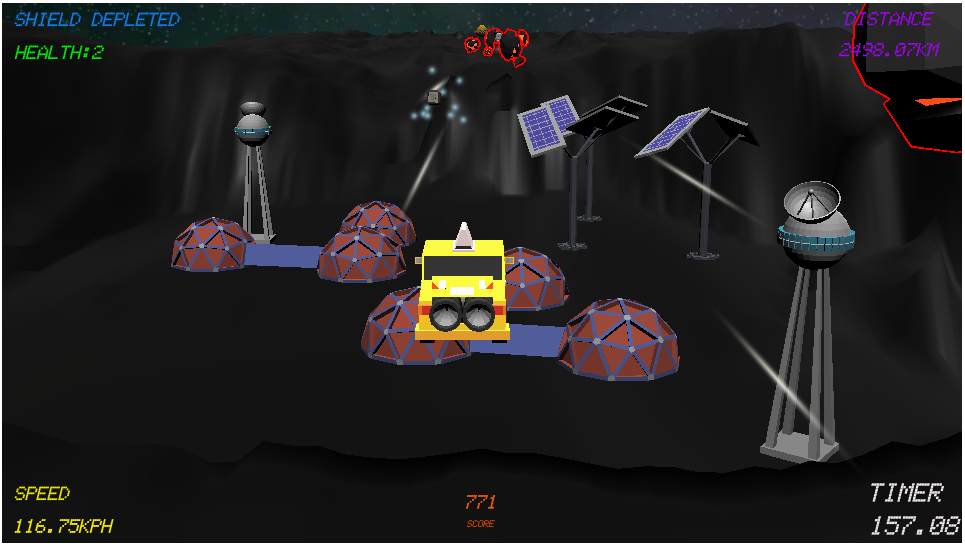

My Portfolio
Unity
Zephyr Express
 Pennsylvania State University capstone project in conjunction with Arizona State University and the National Aeronautics and Space Administration as part of the 2022 Psyche mission.
Recent Software Engineering (B.S.) graduate from The Pennsylvania State University with many years of experience as an amateur programmer. Passionate developer and more importantly passionate about technology.
Scrolling 3D terrain generator using perlin noise.
A* path finding algorithm that finds the shortest path from the upper left corner to the lower right corner. Refresh the page to change the positions of the obstacles.
Marching squares algorithm with a noise map generated using 3D perlin noise. Refresh the page to change the generated map.
A simple Snake Game. Use the arrow keys to control the snake and eat the magenta food blocks.
A simple Flappy Bird Clone. Click the mouse to fly upwards. Try for a high score!
Control the ray casting using the mouse. Refresh the page to change the positions of the obstacles.
Mouse left and right controls the speed of the stars. Mouse up and down controls the number of stars.
Menger Sponge Fractal with a noise map generated using 3D perlin noise. Use the right arrow to increase the fractal depth and left arrow to reset.
A visual maze generator using the depth-first search algorithm.
A flow field simulation using perlin noise.